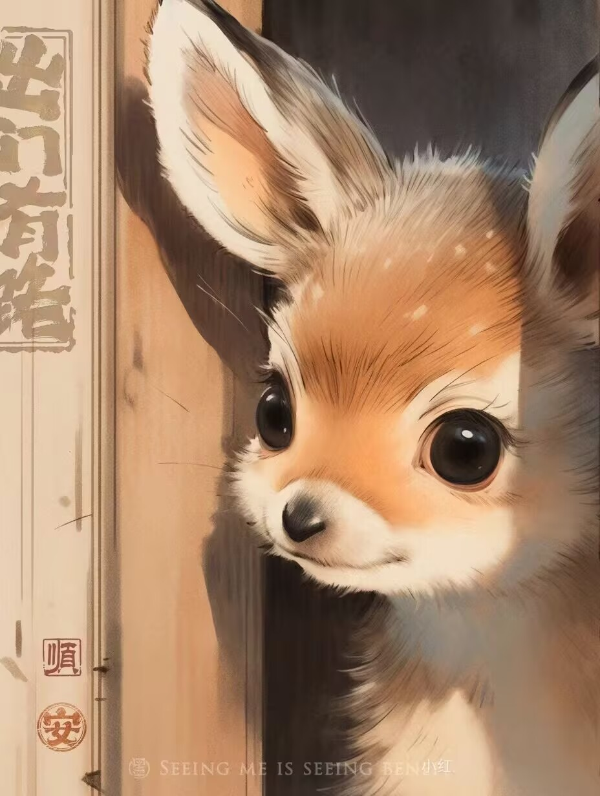
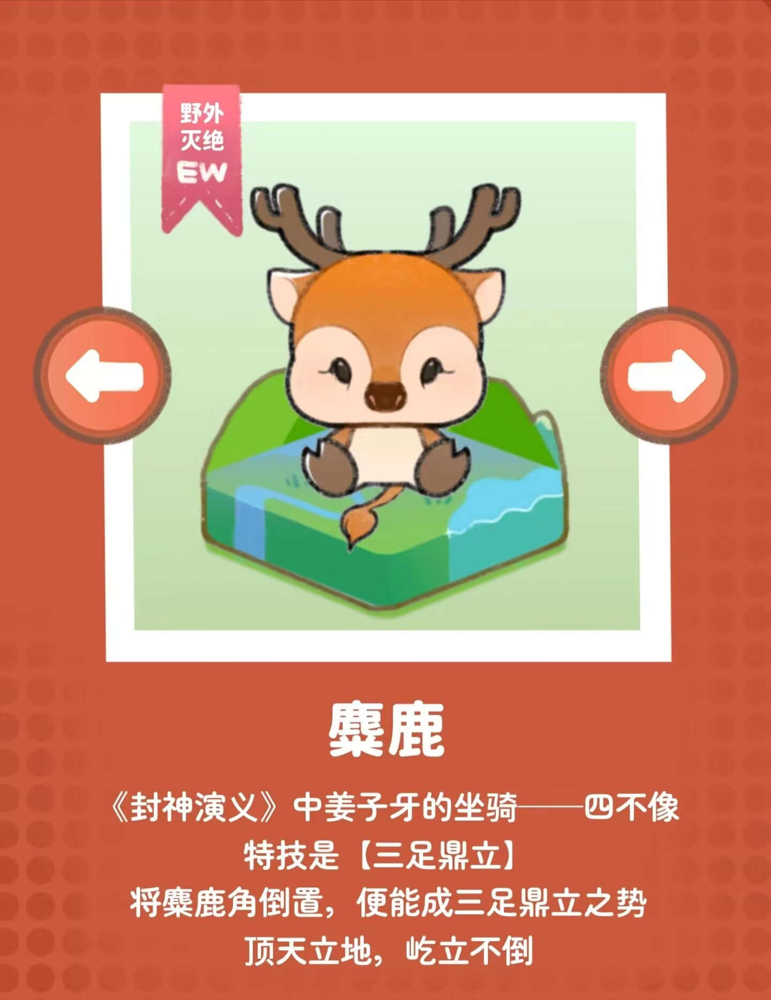
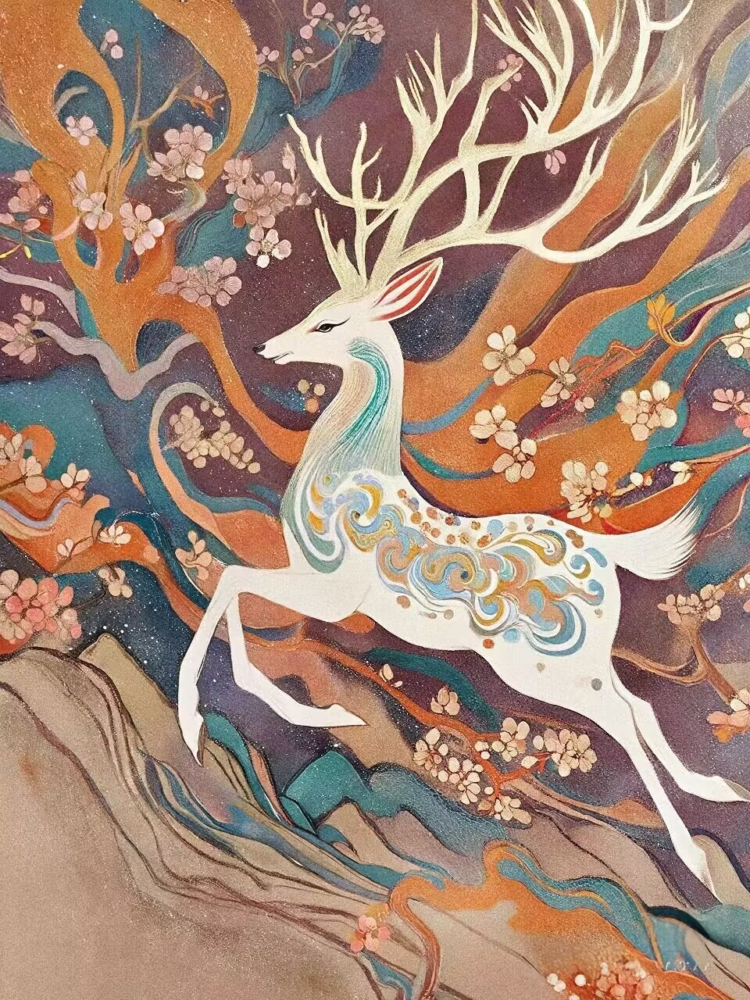

麋鹿想对你说：
“请保护我们，让我们在森林中自由奔跑。” |
 |

麋鹿（学名：Elaphurus davidianus）
是鹿科、麋鹿属唯一的鹿类动物。因为它头脸狭长像马、角像鹿又与其它鹿略有不同、蹄子宽大像牛、尾细长像驴，因此又名四不像。它的角形独特，形状与其它鹿的犄角正好相反，前杈再分小杈，而后杈几乎不分叉。头大，吻部狭长，鼻端裸露部分宽大，眼小，眶下腺非常显著。四肢粗壮，主蹄宽大、多肉，有很发达的悬蹄，行走时带有响亮的磕碰声。麋鹿喜好沼泽湿地生境，以青草和水草为食物。性好合群，善游泳，喜欢以嫩草和水生植物为食。夏季求偶发情，比其它大多数鹿类都早一个季度。
麋鹿曾广布于东亚地区，后来由于自然气候变化和人为因素，在汉朝末年就近乎绝种，最后的麋鹿种群残存于长江中下游湿地。元朝时，为了供游猎，残余的麋鹿被捕捉运到皇家猎苑内饲养。到19世纪时，只剩在北京南海子皇家猎苑内一群。在西方发现后不久被八国联军捕捉并从此在中国消失。直到1898年被英国购买并繁殖到255头，并在1983年将部分个体送回中国。之后有更多的麋鹿回归家乡，并有部分被放生野外。
截至2021年，国家一级保护动物麋鹿在中国的种群数量上万头，已有24个省份引进麋鹿，饲养点和放归地总共84个。 |